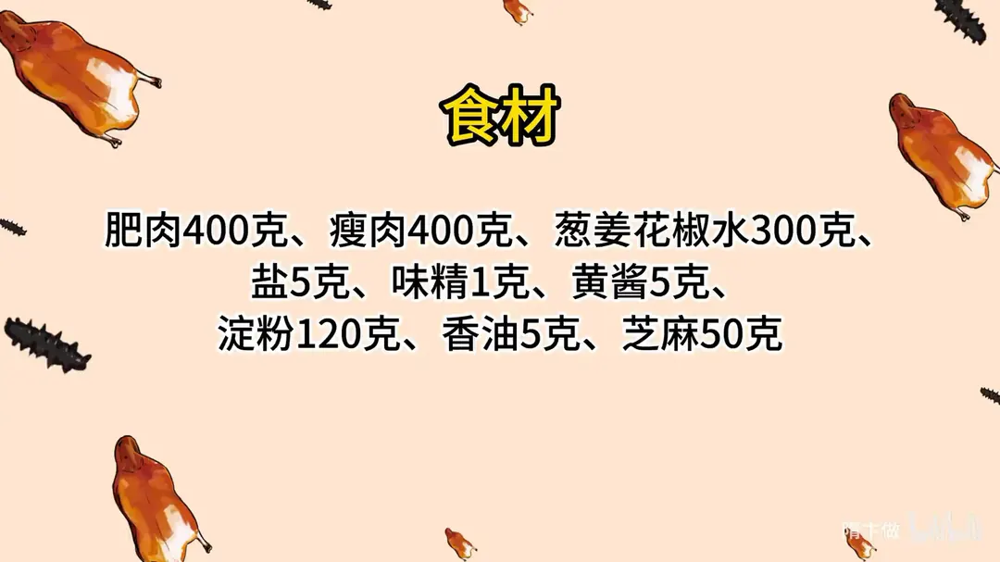
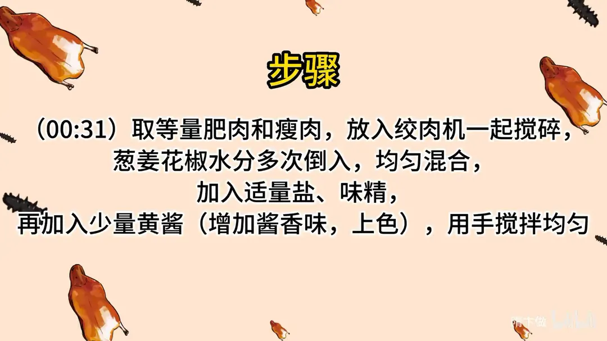
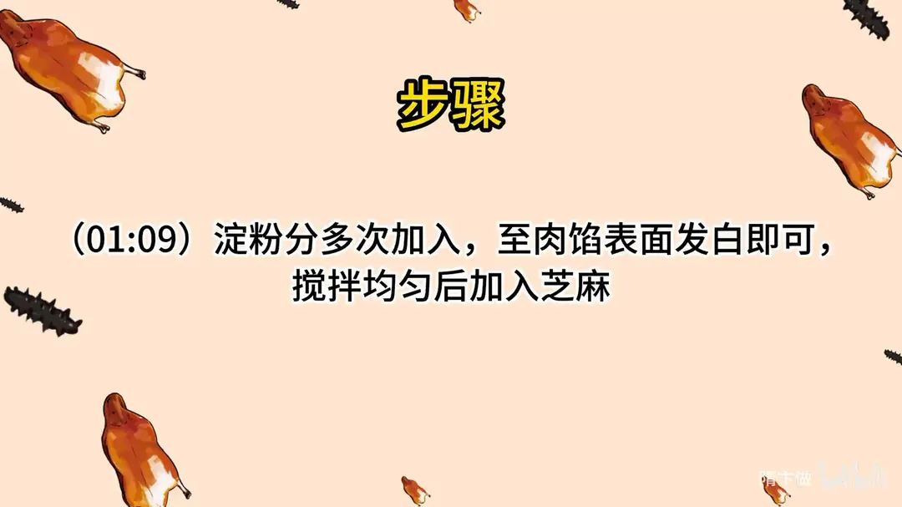
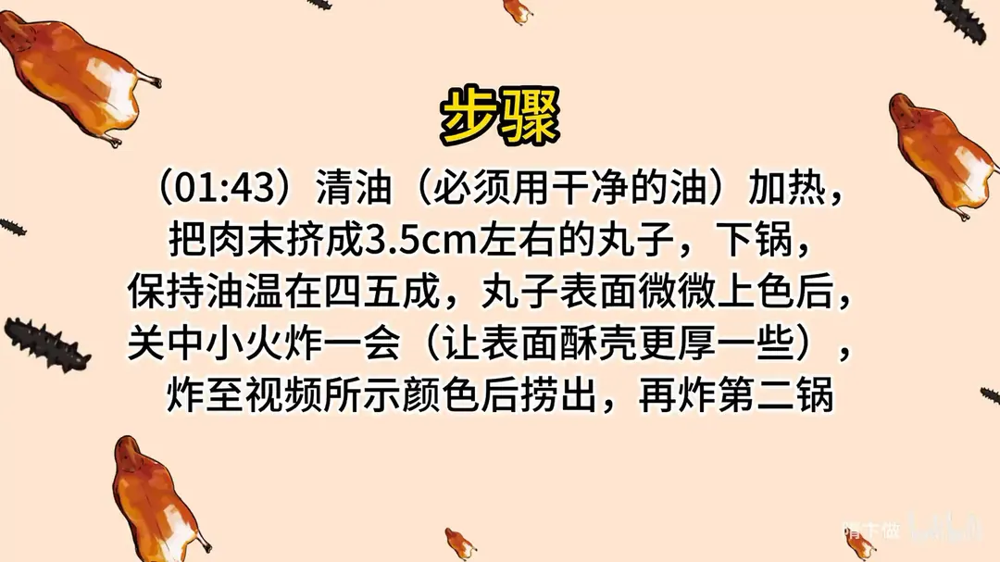
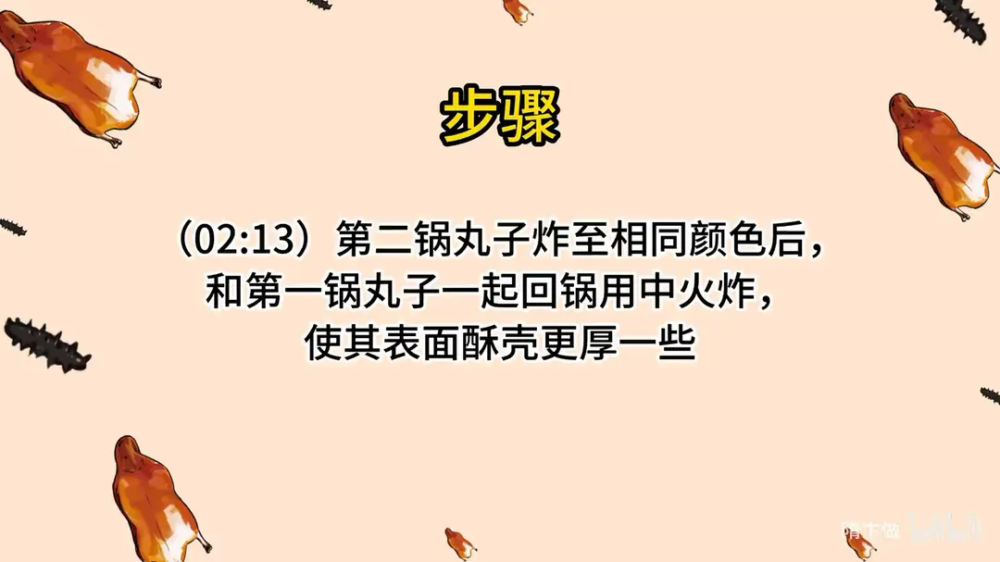
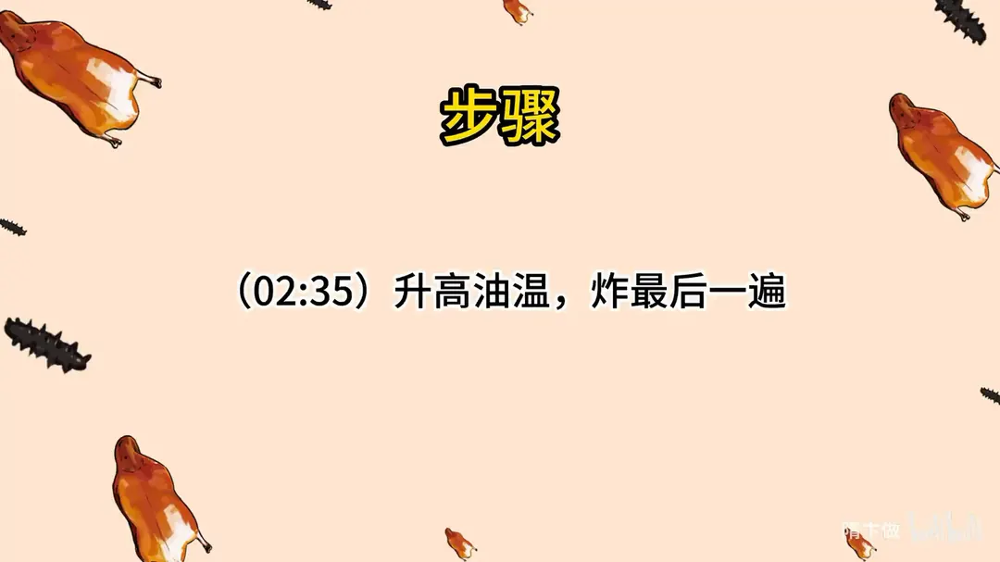
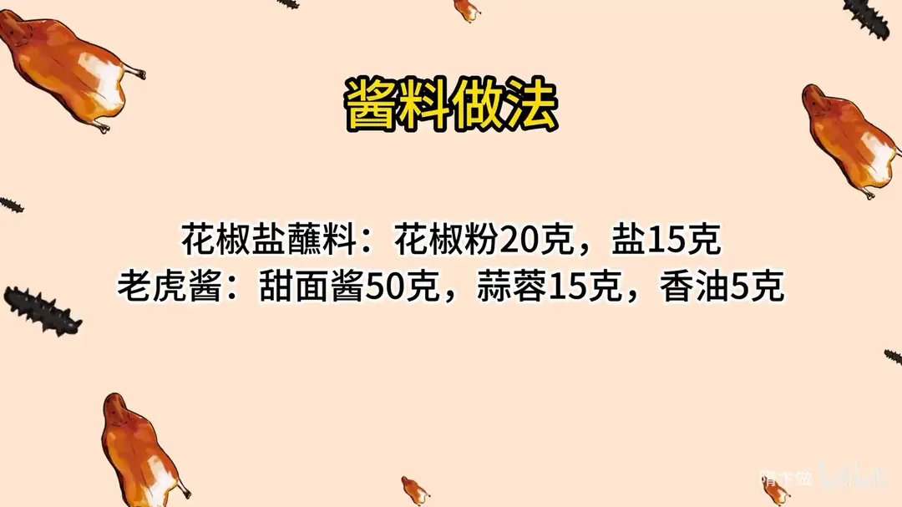

干炸丸子
隋卞一做。肥肉、瘦肉各 400g 绞碎，分次打入 300g 葱姜花椒水，加 120g 淀粉搅至表面发白，撒 50g 芝麻。挤成 3.5cm 丸子，四五成油温下锅，两次回锅、升温复炸共三遍，壳厚酥脆。
原视频：https://www.bilibili.com/video/BV1ju411u7tV
食材
肥肉、瘦肉、葱姜花椒水 等 13 样
| 类别 | 用料 | 用量 |
|---|---|---|
| 主料 | 肥肉 | 400g |
| 主料 | 瘦肉 | 400g |
| 打水 | 葱姜花椒水 | 300g |
| 调料 | 盐 | 5g |
| 调料 | 味精 | 1g |
| 调料 | 黄酱 | 5g |
| 粉料 | 淀粉 | 120g |
| 调料 | 香油 | 5g |
| 粉料 | 芝麻 | 50g |
| 蘸料 | 花椒粉 | 20g |
| 蘸料 | 盐 | 15g |
| 蘸料 | 甜面酱 | 50g |
| 蘸料 | 蒜蓉 | 15g |
步骤
- 绞肉：取等量肥肉和瘦肉，放入绞肉机一起搅碎。
- 打水：葱姜花椒水分多次倒入，均匀混合。
- 调味：加入适量盐、味精，再加入少量黄酱（增加酱香味，上色），用手搅拌均匀。
- 加淀粉：淀粉分多次加入，至肉馅表面发白即可，搅拌均匀后加入芝麻。
- 挤丸下锅：清油（必须用干净的油）加热，把肉末挤成 3.5cm 左右的丸子下锅，保持油温在四五成。
- 初炸：丸子表面微微上色后，关中小火炸一会（让表面酥壳更厚一些），炸至颜色金黄后捞出，再炸第二锅。
- 第二锅：第二锅丸子炸至相同颜色后，和第一锅丸子一起回锅用中火炸，使其表面酥壳更厚一些。
- 复炸：升高油温，炸最后一遍。
- 调蘸料：花椒盐蘸料用花椒粉 20g、盐 15g 拌匀；老虎酱用甜面酱 50g、蒜蓉 15g、香油 5g 调匀。
小贴士
- 炸丸子必须用干净的清油，油不清丸子容易发黑、带异味。
- 淀粉分多次下、搅到肉馅表面发白就停，一次倒完容易起疙瘩。
- 丸子表面微上色后改中小火多炸一会，是为把酥壳炸厚，丸子里外颜色才一致。
讲解要点
难度：★★★☆☆（步骤不难，难在打水和「上色后转小火浸炸」的火候节奏）
为什么这么做
- 肥瘦五五：肥的多吃着腻，瘦的多炸完发干；五五开是油润和咬头的平衡点。
- 肉馅绞得细：丸子在油里待的时间不长，颗粒粗就炸不透，口感发渣。
- 葱姜花椒水分次打足：水是丸子嫩的前提，吸饱水炸后才不硬；一次倒进去吸不进去。
- 黄酱只放一点：黄酱给酱香和底色，但下锅后上色极快，放多了丸子还没熟就先黑了。
- 淀粉多一点、分次加：淀粉既是外壳酥脆的来源，也是锁水的骨架，一次倒完容易起疙瘩。
- 绝对不能放料酒：丸子外层先结壳，料酒的味被包在中间挥发不出去，吃着味道就怪。
- 上色后转中小火浸炸，最后回锅升温复炸：表面定型后低温久炸，把壳里的水分慢慢烘干，这是壳变厚的核心；两锅合并中火加厚壳，再高温逼油上色，共两三遍才又厚又酥。
容易翻车
- 丸子挤得太大：直径 3.5 厘米左右刚好，太大外面焦了里面还生。
- 油温太低丸子下锅就散、还吸油；油温太高则外黑里生。
- 淀粉没拌匀就下锅，丸子局部塌陷、脱壳。
- 省掉「蹲炸」那段时间，壳薄，凉了立刻回软。
- 一次下一满锅，油温骤降，炸出来一锅油丸子。
热评补充
- 图省事就让肉铺老板把肥瘦分开绞两遍，比家里剁更细更匀；有料理机同理。
原片尾卡







原片文案
AI 字幕校准稿
这个菜在账号开始就一直有人问，北京人最爱的丸子——干炸丸子。原来很简单，准备点肉馅。你去菜市场买一半纯肥的肥膘，再买一半瘦的梅花肉，拿绞肉机打了，绞得细一点。家里没有绞肉机就拿刀剁，或者让摊主给你绞两遍。
肉馅肥的多，吃着就腻；瘦肉多了，吃着就是干。无论在餐厅还是在家里边，五五开是最好的比例。
加入葱姜花椒水，多少肉配多少水的比例，你们不用记，最后都会给你们放在片尾。加盐，加一点味精，少加一点黄酱，增加一点酱香味。这个酱一定要少放，加多了下锅以后很快就上色。
加淀粉，淀粉适当的要多一点，要分多次放。肉馅表面看着有点发白了就可以了。再加香油。打这个肉馅一定不能放料酒——丸子中间是肉，外边是一层壳，料酒的味道会被包在中间，根本就炸不出去，所以那个味道就挺怪的。
肉馅搅拌完了，加芝麻，一会儿炸的时候每个上面都带芝麻就行了。前面活儿咱就完事了。
我们开始炸，锅里做上干净的油，注意看我的手腕。丸子下去之后油温降下去了，咱们把火力调大一点，保持一个大约四五成热就行。表面微微上色之后就关中小火，让它慢慢地浸炸一会儿，表面的壳稍微厚一点，这样吃着才能是酥脆的。
炸到这种颜色，有点上色了就捞出来，这会儿应该熟得差不多了。基本炸完之后丸子飘起来了，应该就八九不离十。然后炸下一锅丸子，直径基本上是 3.5 厘米左右，太大不熟。
这两锅颜色、时间一样了，咱们直接都回锅，用中火让它把表面的酥壳加厚一点。炸得色差不多了，然后把油温升高，把这个丸子再炸一遍，一般炸两到三遍就可以了。炸的时候在油里边要有一个蹲的时间，稍微中火泡一会儿，那壳就会很酥、会厚一点，这个时间必须要有，没有它就不会达到那么厚的酥壳。
配了两个蘸料，椒盐和老虎酱，配方的比例放到片尾。肥肉选得合适，所以吃着够酥；油温够，里面也不吃油，也没有那种油哈喇味；葱姜花椒水的比例也合适，没有把肉本身那种香味遮盖掉。它很脆，但是没有油炸的味儿，也没有肉的那种腥味。蘸酱先不蘸，我们专业的都是先白嘴吃。